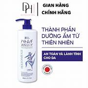
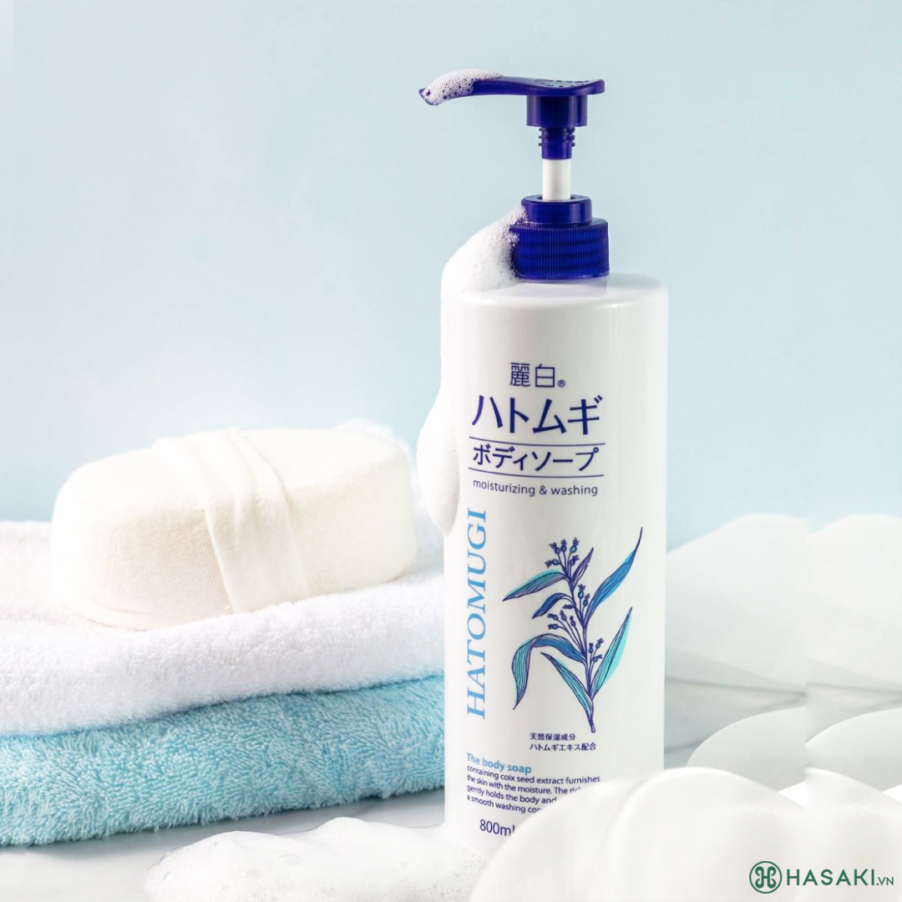
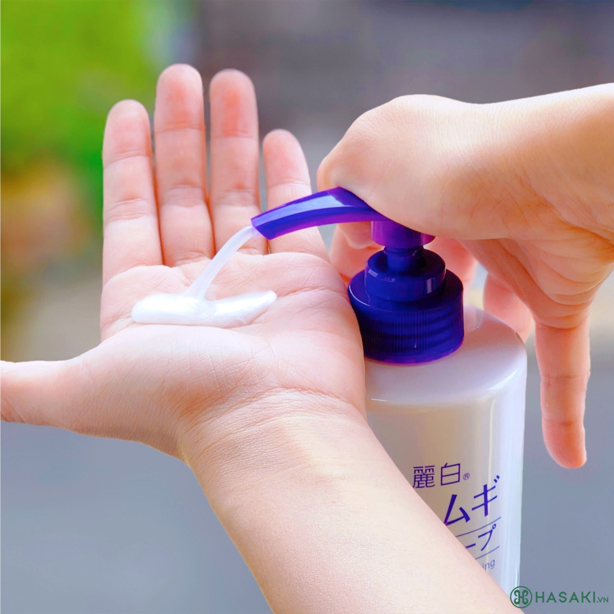

82.000 ₫ (Đã bao gồm VAT)
Giá thị trường: 205.000 ₫ - Tiết kiệm: 123.000 ₫ (60%)
Dung tích: 800ml
Bạn muốn nhận hàng trước 18h hôm nay (Miễn phí). Đặt hàng trong 8 phút tới và chọn giao hàng 2H ở bước thanh toán.
Sữa Tắm Hatomugi Dưỡng Ẩm Chiết Xuất Ý Dĩ là sản phẩm sữa tắm đến từ thương hiệu mỹ phẩm Hatomugi của Nhật Bản, chứa các thành phần dưỡng ẩm tự nhiên như chiết xuất hạt ý dĩ và bơ hạt mỡ, an toàn và lành tính cho da. Công thức tạo bọt mịn và dày giúp nhẹ nhàng làm sạch, đồng thời bảo vệ độ ẩm cho da, mang lại cảm giác thoải mái và mềm mại khi sử dụng.


| Barcode | 4513574027077 |
| Thương Hiệu | Hatomugi |
| Xuất xứ thương hiệu | Nhật Bản |
| Nơi sản xuất | Japan |
| Loại da | Da thường/Mọi loại da |
| Dung tích | 800ml |
Hotline: 0845628919
(Miễn phí 08-22h kể cả T7, CN)
Hướng dẫn đặt hàng
Phương thức thanh toán
Chính sách đổi trả
DANH MỤC SẢN PHẨM
Mỹ phẩm High-End
Chăm sóc cá nhân
Băng vệ sinh
Khử mùi
Nước hoa
Nước hoa nữ
Nước hoa nam